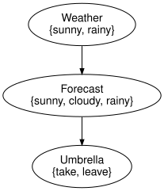

Policies, instantiation and expected utility
Simon Frost
Overview
The syntax of the first vignette says which variables exist and who reads what. The InfluenceDiagramModel adds the numbers: chance kernels, utility functions and a strategy of policies. This vignette follows SPEC sections 26 to 31 on the umbrella problem: policies as kernels, the central reduction instantiate (Proposition 5) and the reference computation of expected utility (Proposition 6).
Setup
using InfluenceDiagrams
m = umbrella_model()InfluenceDiagramModel(3 variables, 1 decision, 1 utility, 2 kernels, 1 bound)umbrella_model binds the numbers of Shachter (1986) to umbrella_diagram: the weather is sunny with probability 0.7, the forecast is right most of the time, and the utility rewards leaving the umbrella at home when it is sunny.
cpt(kernel(m, :Forecast))2×3 Matrix{Float64}:
0.7 0.2 0.1
0.15 0.25 0.6utility_table(utility(m, :U))2×2 Matrix{Float64}:
20.0 100.0
70.0 0.0Policies
A policy for decision $D$ is a stochastic kernel from its information set to its action space, $\delta_D : I_D \to A_D$. Three kinds are provided:
DeterministicPolicy: a table, dictionary or function from information states to actions;StochasticPolicy: any normalisedFiniteKernelwith the right domain and codomain;ConstantPolicy: always the same action, whatever the information.
deterministic_policy reads the axes from the model, so only the rule has to be given.
take_when_rainy = deterministic_policy(m, :Umbrella, f -> f == :rainy ? :take : :leave)
policy_table(take_when_rainy)3-element Vector{Symbol}:
:leave
:leave
:takepolicy_kernel is the kernel that instantiate binds to the decision: a one-hot kernel for a deterministic policy, the kernel itself for a stochastic one, and the discard-then-point-mass kernel for a constant one (which needs the spaces of the model).
k = policy_kernel(take_when_rainy)
cpt(k)3×2 Matrix{Float64}:
0.0 1.0
0.0 1.0
1.0 0.0cpt(policy_kernel(ConstantPolicy(:take), m, :Umbrella))3×2 Matrix{Float64}:
1.0 0.0
1.0 0.0
1.0 0.0Every policy is checked against its decision (validate_policy, SPEC section 37 item 9): the information axes must match the information set in order, the action axis must be the action variable’s, a constant must be one of its states.
try
set_policy(m, :Umbrella, ConstantPolicy(:sideways))
catch e
e
endPolicySignatureError(:Umbrella, :table, [:take, :leave], :sideways)Strategies
A Strategy holds one policy per decision. Models are immutable values: set_policy and fix_decision return new models and leave the original untouched.
m1 = set_policy(m, :Umbrella, take_when_rainy)
m2 = fix_decision(m, :Umbrella => :leave)
strategy(m), strategy(m1), strategy(m2)(Strategy(), Strategy(Umbrella => DeterministicPolicy), Strategy(Umbrella => ConstantPolicy))Instantiate: the central reduction
Substituting a complete strategy into the diagram yields an ordinary Bayesian network (SPEC section 28): each decision gets a mechanism named policy[D] with reference PolicyRef(D), whose inputs are the information set in information_position order, and the Bayesian-network part of the diagram is copied into a fresh BayesNet. This is the only place where information arcs turn into causal inputs, and only for the policies supplied.
bn = instantiate(m1)BayesModel(3 variables, 3 mechanisms, 3 kernels)syntax(bn)BayesianNetworks.BayesNet {Variable:3, State:7, Mechanism:3, Input:2, Label:0, Position:0, Ref:0}
| Variable | variable_name | space_ref |
|---|---|---|
| 1 | Weather | NoRef() |
| 2 | Forecast | NoRef() |
| 3 | Umbrella | NoRef() |
| State | state_variable | state_name | state_position |
|---|---|---|---|
| 1 | 1 | sunny | 1 |
| 2 | 1 | rainy | 2 |
| 3 | 2 | sunny | 1 |
| 4 | 2 | cloudy | 2 |
| 5 | 2 | rainy | 3 |
| 6 | 3 | take | 1 |
| 7 | 3 | leave | 2 |
| Mechanism | target | mechanism_name | kernel_ref |
|---|---|---|---|
| 1 | 2 | Forecast_mechanism | NamedRef("Forecast_mechanism") |
| 2 | 1 | Weather_mechanism | NamedRef("Weather_mechanism") |
| 3 | 3 | policy[Umbrella] | PolicyRef(:Umbrella) |
| Input | input_mechanism | input_variable | input_position |
|---|---|---|---|
| 1 | 1 | 1 | 1 |
| 2 | 3 | 2 | 1 |
Proposition 5 says the result is a valid closed network, which is checked structurally and numerically:
validate(bn; closed = true, unique_names = true, semantics = true)
sum(joint_distribution(bn).table)1.0to_graphviz(bn)
The Lean development in proofs/ proves the same statement for the finite model (closed_instantiate, sum_joint_instantiate_eq_one) and the factorisation of the joint law of SPEC section 31, joint_instantiate.
Expected utility
Under a strategy the joint law is $P_\sigma(x) = \prod_X \kappa_X \prod_D \delta_D$, the total utility is additive, $U(x) = \sum_j u_j(x)$, and $EU(\sigma) = \sum_x P_\sigma(x) U(x)$ (Proposition 6). expected_utility follows the reference algorithm of SPEC section 31 literally: instantiate, enumerate the joint by brute force, evaluate the total utility of every assignment, take the expectation.
expected_utility(m1)76.99999999999999Fixed actions are the two extremes: always leaving the umbrella gives 70, always taking it 35. Pairs :D => :a are a shortcut for fix_decision.
expected_utility(m, :Umbrella => :leave), expected_utility(m, :Umbrella => :take)(69.99999999999999, 35.0)Every deterministic policy of the decision can be enumerated; the best of the eight is the one that reacts to a rainy forecast, with expected utility 77.
[(policy_table(p), expected_utility(m, Strategy(:Umbrella => p)))
for p in all_deterministic_policies(m, :Umbrella)]8-element Vector{Tuple{Vector{Symbol}, Float64}}:
([:take, :take, :take], 35.0)
([:leave, :take, :take], 71.05)
([:take, :leave, :take], 40.949999999999996)
([:leave, :leave, :take], 76.99999999999999)
([:take, :take, :leave], 28.0)
([:leave, :take, :leave], 64.05)
([:take, :leave, :leave], 33.949999999999996)
([:leave, :leave, :leave], 69.99999999999999)Fixing a decision and intervening on its action variable are different operations (SPEC section 41). fix_decision keeps the decision and gives it a constant policy; do_intervention on the action removes the decision (with its information set) and installs a constant mechanism, a physical override recorded in the history. For the same action they give the same expected utility, but the diagrams differ.
done = do_intervention(m, :Umbrella => :take)
nparts(syntax(m2), :Decision), nparts(syntax(done), :Decision), history(done)[1].note(1, 0, "removed decision Umbrella")expected_utility(m2), expected_utility(instantiate(done))(69.99999999999999, 35.0)Evidence conditions the expectation: with a rainy forecast recorded by observe, the posterior probability of rain is 0.72 and taking the umbrella is worth more.
e = observe(m, :Forecast => :rainy)
expected_utility(e, :Umbrella => :take), expected_utility(e, :Umbrella => :leave)(56.0, 27.999999999999996)Summary
A policy is an ordinary kernel from a decision’s information set to its action, a strategy is one policy per decision, and instantiate substitutes them into the syntax to produce a plain BayesModel – which is why expected utility needs no new machinery beyond inference on that model. Evidence conditions the expectation exactly as it conditions a posterior. The next vignette, Optimisation: exhaustive versus decision variable elimination, searches over strategies instead of evaluating a given one.
References
Shachter, Ross D. 1986. “Evaluating Influence Diagrams.” Operations Research 34 (6): 871–82. https://doi.org/10.1287/opre.34.6.871.